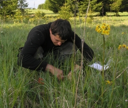

Zdeněk Janovský
Head, plant population biology, floral ecology, statistic
Head, plant population biology, floral ecology, statistic

Ph.D. student, ecology and diverstiy of hoverflies and other dipterans

Ph.D. student, plant floral pathogens

Ph.D. student, floral ecology, pollen transfer, contact person and webmaster

Master student, pollinator behaviour, focused on hoverflies

Master student, pollen carry-over by pollinators

Master student, influence of microclimatic condition on pollinator activity